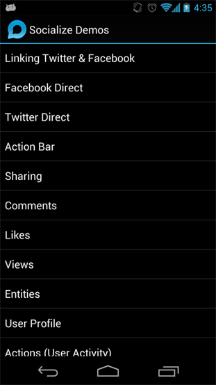

Socialize Demo App
We know you love sample code so included in your SDK download is a demonstration app which shows examples of all the features of Socialize.
Note
The Demo app is located in the /demo folder of your SDK download
Import the Project
First import the project into eclipse...

|

|
Setting up Facebook
If you want to test the Facebook integration in the demo app you will need to setup the demo app with your
Facebook credentials.
Refer to Facebook Integration for more information
Socialize Demo App¶
We know you love sample code so included in your SDK download is a demonstration app which shows examples of all the features of Socialize.
Note
The Demo app is located in the /demo folder of your SDK download
Import the Project¶
First import the project into eclipse...
Setting up Facebook¶
If you want to test the Facebook integration in the demo app you will need to setup the demo app with your Facebook credentials.
Refer to Facebook Integration for more information